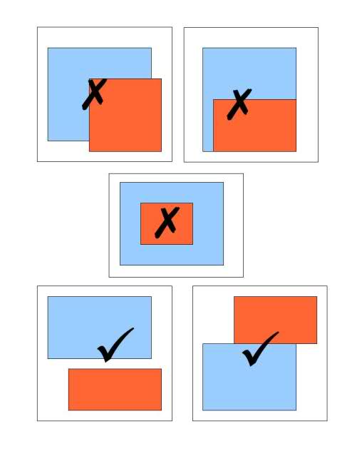

An index is just a data structure that makes the searching faster for a specific column in a database.
It takes up space, and the bigger your table is, the bigger your index will be. Another performance hit with indexes is that you must do the same actions on your index whenever you add, delete, or update entries in the corresponding table. Keep in mind that an index must include the same up-to-date data as whatever is in the table column covered by the index.
A hash index, inverts the relationship between a primary key and a value in the table.
Balanced tree, not binary tree.
< / > operators.Official docs: https://www.postgresql.org/docs/current/btree-intro.html
Good explainer: https://rahulreddyr3.medium.com/indexing-in-postgresql-b-tree-4377bd72d7e5
| pk | menu item |
|---|---|
| 1 | chicken burger |
| 2 | chickpea burger |
| val | pk |
|---|---|
| chicken | 1 |
| chickpea | 2 |
| burger | [1, 2] |
<@@>=&&Good for when a value of a row can overlap with the same column in another row. Think polygons on a map, or to return only rows where the polygon contains a point.
GiST indexes can also be used on text columns for full text search similar to GINs but there are some fixed size constrains for GiST indexes.
Further reading: https://medium.com/postgres-professional/indexes-in-postgresql-5-gist-86e19781b5db

When you have a huge dataset that is organised by dates, such as log events, BRIN indexes allow you to rapidly skip or eliminate a lot of the irrelevant data. BRIN indexes are also kept as smaller indexes in relation to the entire data size, making them an excellent choice for huge datasets.
Docs: https://www.postgresql.org/docs/current/brin-intro.html
Example: A database table storing logins.
Optimised using a Hash index
Rows will be represented as a namedtuple.
from collections import namedtuple import datetime Login = namedtuple('Login', ['email', 'date', 'user_agent', 'ip'])
Tables will be represented as a Python list
[ Login( email='ostafford@example.org', date=datetime.date(2010, 4, 13), user_agent='Mozilla/5.0 (X11; Linux x86_64) AppleWebKit/531.0 (KHTML, like Gecko) Chrome/54.0.869.0 Safari/531.0', ip='44.14.199.207' ), Login( email='joe@example.com', date=datetime.date(2013, 11, 3), user_agent='Mozilla/5.0 (X11; Linux x86_64) AppleWebKit/531.0 (KHTML, like Gecko) Chrome/94.0.822.0 Safari/541.0', ip='22.12.189.17' ) ]
CREATE TABLE IF NOT EXISTS logins ( id serial primary key, email VARCHAR(100) unique not null, date timestamp not null default NOW(), user_agent VARCHAR(1000) not null, ip inet not null );
from pprint import pprint import faker import random import datetime fake = faker.Faker() # generator for time series that returns # datetime objects 1 sec after the previous dt_generator = fake.time_series(precision=1) def make_row(): return Login( fake.unique.email(), next(dt_generator)[0], fake.chrome(), fake.ipv4_public() ) table = [make_row() for _ in range(10000)] random_login = random.choice(table) last_login = table[-1] pprint(last_login)
Login(email='fhill@example.org', date=datetime.datetime(2022, 3, 22, 17, 31, 7), user_agent='Mozilla/5.0 (X11; Linux x86_64) AppleWebKit/533.0 (KHTML, like Gecko) Chrome/38.0.830.0 Safari/533.0', ip='64.46.108.84')
from timeit import timeit def find_by_email(t, email): for x in t: if x.email == email: return x
timeit( 'find_by_email(table, last_login.email)', globals=globals(), number=10000 )
3.6173106500064023
h_i = {login.email: i for i, login in enumerate(table)} def find_by_email_with_hash_index(t, email, hash_index): return table[hash_index[email]] # peek at the index pprint(dict(list(h_i.items())[:3]))
{'lisataylor@example.org': 0, 'phess@example.com': 2, 'taguilar@example.net': 1}
timeit( 'find_by_email_with_hash_index(table, last_login.email, h_i)', globals=globals(), number=10000 )
0.0046695820055902
Exercise left to the reader, would look almost the same as above except you'd have to watch me implement a Balanced Tree.
You could try the Python heapq standard library if you want to try.
A GiST doesn't make sense for logins so let's make a blog post table.
Blog = namedtuple( "Blog", ["title", "body", "tags"] ) tags = fake.words(nb=10) def make_blog(): return Blog( title=fake.sentence(nb_words=10), body=fake.paragraph(), tags=random.sample(tags, 3) ) blog_table = [make_blog() for _ in range(1000)] # peek at the blog table pprint([x._asdict() for x in blog_table[:2]], width=41, compact=1)
[{'body': 'Knowledge collection source. '
'Responsibility might model '
'article. Hope information '
'address trade like.',
'tags': ['worry', 'heart', 'sing'],
'title': 'News story goal night '
'computer system discover '
'interview candidate sister '
'I.'},
{'body': 'Those focus include task '
'southern. Pass study '
'challenge us care themselves '
'method. Manage agreement '
'admit.',
'tags': ['worry', 'from',
'investment'],
'title': 'Expect page red order '
'including next run behavior '
'cold explain.'}]
from timeit import timeit def find_by_tag(blog_posts, tag): result = [] for blog in blog_posts: if tag in blog.tags: result.append(blog) return result
tag_to_find = random.choice(tags) print(f"finding tag: {tag_to_find}") timeit( 'find_by_tag(blog_table, tag_to_find)', globals=globals(), number=50000 )
4.431407541997032
from collections import defaultdict gin = defaultdict(list) for idx, blog_post in enumerate(blog_table): for tag in blog_post.tags: gin[tag].append(idx) def find_by_tag_gist(blog_posts, tag, gin_index): return [blog_posts[i] for i in gin_index[tag]]
Peek at index
pprint(dict(list(gin.items())[:1]), width=60, compact=True)
{'worry': [0, 1, 4, 11, 15, 19, 23, 24, 25, 28, 29, 36, 39,
40, 41, 42, 43, 45, 46, 48, 52, 57, 58, 59, 60,
64, 68, 89, 102, 103, 109, 122, 123, 126, 128,
130, 132, 143, 146, 148, 150, 151, 153, 164, 165,
181, 184, 185, 187, 189, 192, 194, 197, 205, 212,
213, 214, 215, 224, 233, 240, 241, 242, 243, 249,
250, 253, 256, 265, 266, 267, 270, 282, 283, 284,
292, 296, 298, 299, 301, 310, 315, 317, 318, 321,
323, 325, 330, 332, 334, 336, 337, 339, 345, 348,
349, 351, 357, 358, 359, 361, 364, 368, 374, 376,
377, 390, 392, 395, 397, 399, 403, 406, 407, 409,
411, 412, 413, 415, 417, 420, 422, 431, 433, 441,
445, 453, 454, 456, 458, 468, 471, 473, 475, 481,
482, 483, 485, 488, 489, 490, 496, 498, 503, 504,
517, 521, 522, 528, 531, 535, 538, 541, 549, 550,
553, 554, 561, 565, 569, 579, 580, 582, 585, 586,
590, 595, 599, 600, 601, 610, 615, 620, 623, 627,
628, 631, 632, 633, 635, 637, 638, 640, 641, 643,
644, 648, 652, 654, 656, 657, 660, 665, 671, 690,
692, 699, 707, 712, 713, 717, 720, 722, 731, 738,
739, 753, 754, 756, 757, 758, 761, 765, 768, 780,
783, 784, 787, 789, 790, 792, 794, 795, 796, 802,
804, 805, 808, 811, 817, 820, 826, 834, 835, 838,
842, 845, 848, 858, 861, 862, 863, 865, 867, 868,
870, 873, 879, 884, 889, 890, 896, 897, 899, 902,
909, 910, 913, 914, 916, 918, 919, 920, 922, 923,
925, 926, 931, 932, 950, 956, 962, 964, 965, 966,
969, 974, 976, 977, 979, 984, 986, 992, 994]}
Peek at the distribution of tags to blog posts
pprint({k: len(v) for k, v in gist.items()}, width=70, compact=True)
{'about': 927,
'although': 888,
'bring': 318,
'cause': 894,
'child': 300,
'consider': 936,
'could': 831,
'growth': 295,
'house': 306,
'moment': 303,
'now': 915,
'party': 846,
'player': 283,
'professor': 296,
'require': 888,
'say': 888,
'she': 299,
'song': 293,
'study': 307,
'such': 987}
A contrived example would take too long to describe here.
Block range indexes
Unlike GIN, all values don't need to be stored in the index, only the block boundaries.
Our logins table is already time series data so lets query that. What if we want to get all logins that happened after certain hour?
# pick a random minute random_minute = random.choice(sorted(list({x.date.replace(second=0) for x in table}))) print(f"finding logins after {random_minute.isoformat()}") def find_after_minute(login_table, minute: datetime.datetime): results = [] for login in login_table: if login.date > minute: results.append(login) return results
finding logins after 2022-03-22T16:22:00
timeit( 'find_after_minute(table, random_minute)', globals=globals(), number=10000 )
5.5237757849972695
Create a BRIN
brin = defaultdict(int) current_block = None def timestamp_to_block(dt: datetime.datetime): """for any dt, ignore seconds""" return dt.replace(second=0) for idx, login in enumerate(table): if current_block == timestamp_to_block(login.date): # do nothing pass else: current_block = timestamp_to_block(login.date) brin[current_block] = idx # peek at the index pprint(list(brin.items())[:5])
[(datetime.datetime(2022, 3, 22, 14, 44), 0), (datetime.datetime(2022, 3, 22, 14, 45), 32), (datetime.datetime(2022, 3, 22, 14, 46), 92), (datetime.datetime(2022, 3, 22, 14, 47), 152), (datetime.datetime(2022, 3, 22, 14, 48), 212)]
Lookup function using the index:
def find_after_minute_brin(login_table, random_minute, brin_index): return login_table[brin_index[random_minute]:]
Time it
timeit( 'find_after_minute_brin(table, random_minute, brin)', globals=globals(), number=10000 )
0.16611792900948785